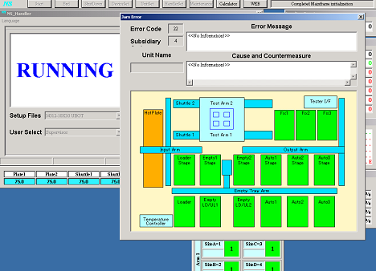

Service History
Subject: EEMS NS7000 MMI 2.0M issue
Handler Model: NS-7000
Controller: RC520
Date: 1 Aug 2008
Symptom
After installed the new patch MMI 2.0M ( for 20) including those handlers that were not affected by the hang up issue.
Currently, I encountered one problem after installing MMI 2.0M.
During initial start, Error code 22 happened but there is no information on error message.
By depressing Retry+Start, handler able to run in normal condition.

Action
Cause